Setup the Development environment
With the required SDKs and software installed, we can
now start setting up our development
environment.
Check list:
- DirectX February 2010 SDK
- PhysX SDK if required
- Visual Studio C++ 2008 Express
- Updated video drivers
- Torque T3D source code downloaded from your user account.
Please note, you can use any C++ compiler for your projects. For this
tutorial we decided to use
Visual Studio C++ Express as it is free and easy to set up with the T3D
Source code.
Getting up and running
1) Run Visual Studio 2008 and register the product if you have
not done so already. To do this head to the Help menu, select the option Register Product. Registering
is free and prevents the 30 day limit.
(click to enlarge)
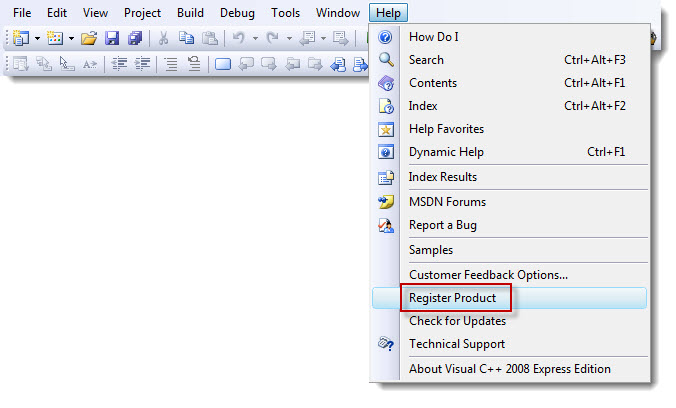
2) If this is your first time using the product, take time to look around the menus and the rest
of the IDE. Don't worry, it will all become familiar after a while.
(click to enlarge)
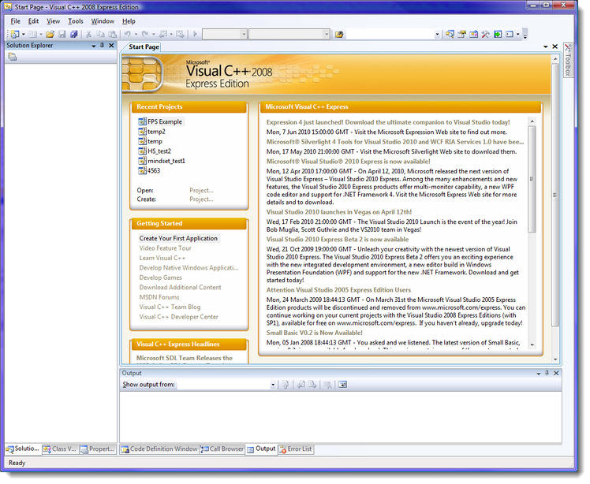
Setting up the Compiler
Before we can start compiling our source code, we need to tell the
compiler where we have installed
all of our SDK Components. Initially we will start with the minimum
requirement -- DirectX.
3) Open the option window from menu>Tools>Options...
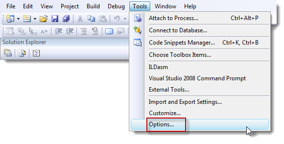
4) From this window, on the left-hand side there is a
panel with sub menu headings. Open the Projects and Solution > VC++ Directories. This section is where
we tell Visual Studio where to
find any additional files that will be required when we compile the T3D
engine, e.g. DirectX
(click to enlarge)
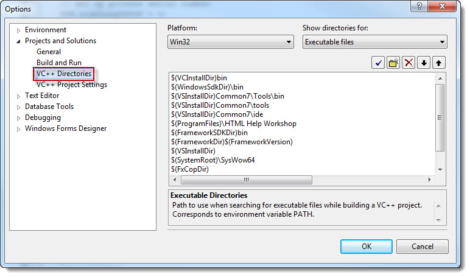
5) On the top right hand side of this window, you will find
a drop down list Show directories for:. From this list select Executable files.
(click to enlarge)
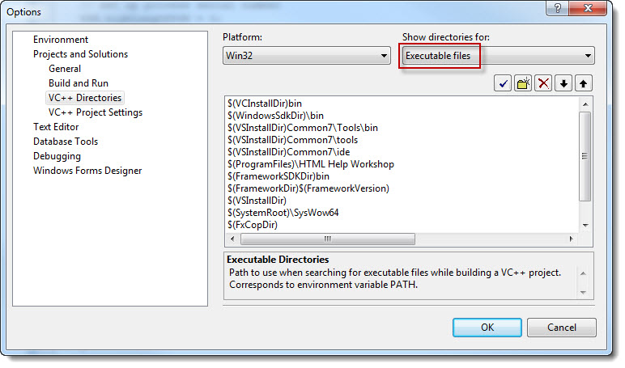
6) Next select the small folder icon. This will open up a new
selection in the window.
(click to enlarge)
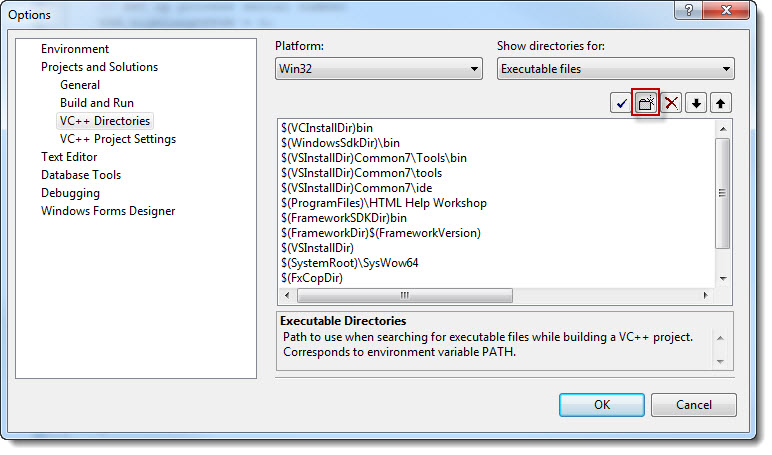
7) After clicking on the folder icon, we are presented with a
selection in the lower window which includes
a browse-to button icon. If not already showing, please press this icon
and locate your DirectX
installation folder. If you installed to the default location it should
be;
Program Files\Microsoft DirectX SDK (February 2010)\Utilities\Bin\x86
(click to enlarge)
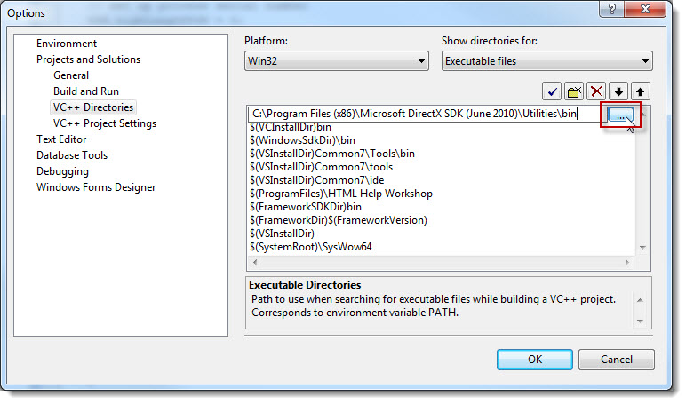
8) Next we will select the "Include Files" section from
the top right drop down.
(click to enlarge)
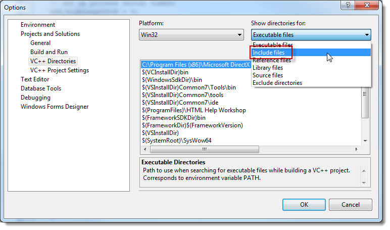
9) Once again select the folder icon as we did in steps 6 and
7 above. This time we want to
locate the DirectX include folder. If you installed to the default
location, it should be;
C:\Program Files\Microsoft DirectX SDK (February 2010)\Include
(click to enlarge)
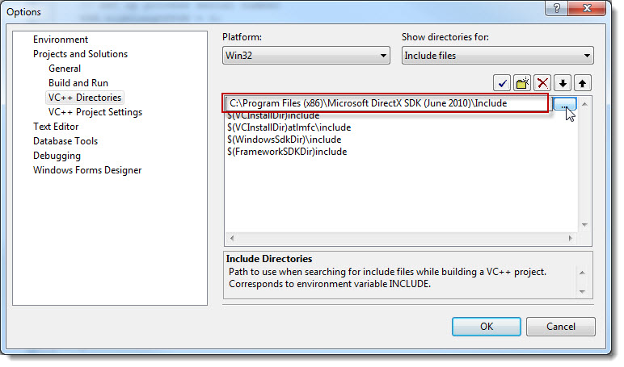
10) Now we need to add the path to our directX library
files, select library from the top
dropdown.
(click to enlarge)
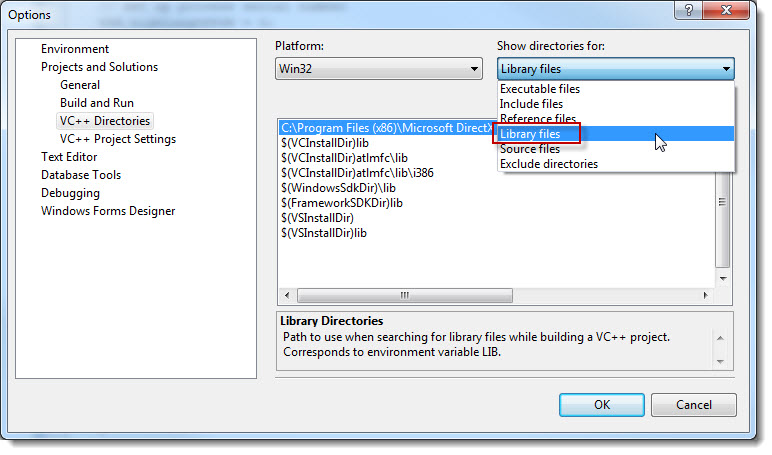
11) Use the folder icon to add a folder
path, and select the folder where the DirectX
library files are located. If you installed to the default location, it
should be;
C:\Program Files\Microsoft DirectX SDK (February 2010)\Lib\x86
(click to enlarge)
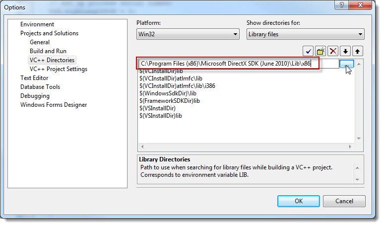
12) That is all the DirectX file paths
added.
Next, point your attention to the VS IDE layout. If you
look at the lower section of the
interface, you will notice a tabbed section. What we are looking for here
is the Error List Tab and the Output Tab as shown below.
(click to enlarge)
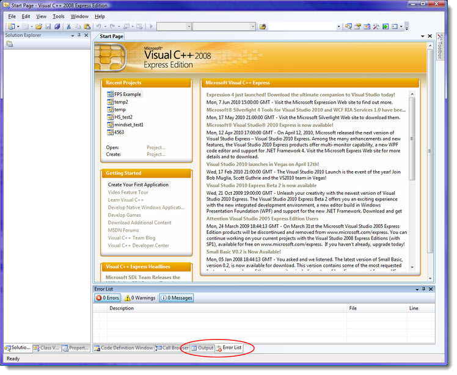
If these tabs are not visible, you can make them so via the menu:
menu>View>Output
menu>View>Other Windows>Error List
(click to enlarge) 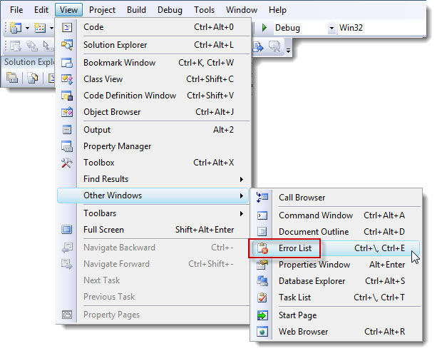
If the Output window is floating,
drag it to the lower section and dock it.
We are now ready to look at the T3D source code. Before we move on,
please have a look at this section of
documentation explaining the layout of the source code folders: T3D Engine SDK Tour
When you are ready, we can move on to the final steps of this tutorial Part 5 - Working with a T3D
Project.
|
{kind=link}
{kind=link}
{kind=link}
{kind=link}
{kind=link}
{kind=link}
{kind=link}
{kind=link}
{kind=link}
{kind=link}
{kind=link}
{kind=link}